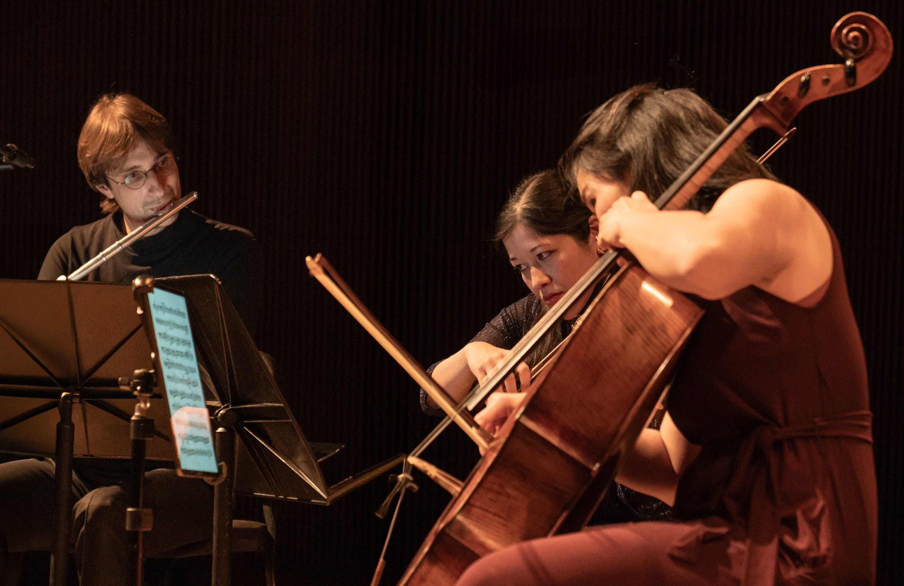

Ten pairs of tickets to Winterlight, free
For the December concert we are giving away twenty seats, as ten pairs, to people who write and tell us they would like to come. Entries close on 3 December and the draw is a week before the concert.

New York, NY, 11 November 2026. For Winterlight, on 11 December, CreArtBox is giving away twenty tickets. They go as ten pairs, by lottery, to people who write to info@creartbox.nyc with WINTERLIGHT LOTTERY in the subject line and one sentence on why they would like to come. Entries close at midnight on 3 December. The draw is on 4 December, a week before the concert, and everyone who entered hears the result the same day.
How to enter is here, and it takes about a minute.
Why
A concert ticket is an odd thing to ask a stranger to buy.
Almost everything else you spend fifteen dollars on, you already know whether you like. You have had the coffee before. You have seen the trailer. A chamber music concert, if you have never been to one, is fifteen dollars and an evening spent finding out, and if the answer turns out to be no, you have paid to learn it. That is a real reason not to come, and it has nothing to do with the music.
So we would rather take it off the table for a few people and see who turns up.
This is not new for us, it is only louder. Free and subsidised seats have been part of how this ensemble works for years, through NYC Culture Pass and through the Queens Public Library, paid for by people who give to CreArtBox so that the price of a seat is not the thing that decides who is in the room. Those programmes are quiet by design. This one is not, because the point of it is that people hear about it.
Twenty seats is not a gesture
We want to be straight about the size of this. The DiMenna Center is not an arena. Twenty tickets is a visible share of the hall, and handing them out instead of selling them is a decision about what the evening is for.
Our tickets start at $15, which is low for New York, and $15 is still not nothing. The people who buy one are what pays the musicians who play that night. Nobody is being given a free concert instead of a paid one. The two things sit side by side, and the room is better for having both kinds of listener in it.
What we are asking for, and what we are not
One sentence on why you would like to come. That is the whole entry.
It is not a competition, and the sentence does not change your odds. The draw is random, from everyone who wrote in. We ask because we would like to know who is coming, and because a line from a stranger about why they want to hear Stravinsky on a Friday in December is a good thing to receive. It is not an essay and nobody is marking it.
Your email address is used to tell you the result and then it is deleted. We will not add you to anything. If you would like to hear from us about future concerts you can say so in your email and we will add you, and you can leave whenever you want. If you do not say so, we will not.
The concert
Winterlight is on Friday 11 December at 7:30 pm, at The DiMenna Center for Classical Music, 450 West 37th Street. The programme is the world premiere of Hannah Selin's Tectonic Lullaby, Ravel's Ma Mère l'Oye with projections built from historical editions of the fairy tales it draws on, Oliver Caplan's Canciones de Monteverde, chosen through the open call, and Stravinsky's Petroushka in a chamber arrangement.
If you win, that is the evening. If you do not, tickets start at $15, and we would rather see you there than not.